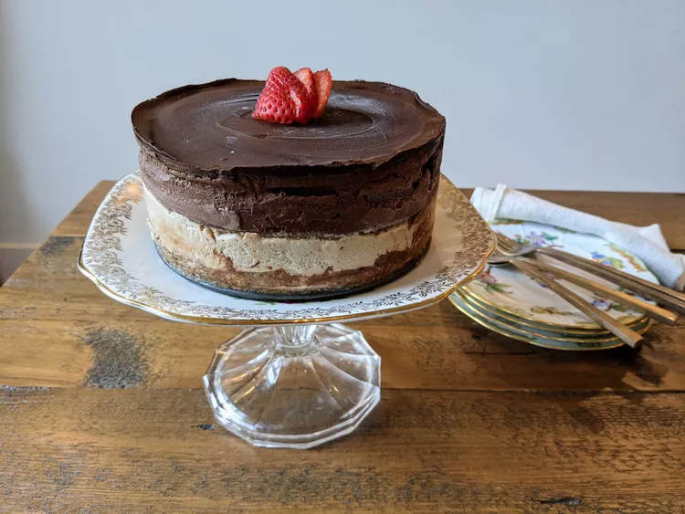

Overnight Oats

Description
This is a make-ahead breafkfast that will keep your stomach full until lunchtime
Ingredients
- 1/3 cup milk
- 1/4 cup Greek yoghurt
- 1/4 cup rolled oats
- 2 teaspoons honey
- 2 teaspoons chia seeds
- 1/4 teaspoon gorund cinnamon
- 1/4 fresh blueberries
Steps
- Gather all the Ingredients
- Combine milk, yoghurt, oats, honey, chia seeds and cinnamon in a 1/2 pint jar with alid and shake until combined.
- Fold in blueberries
- Cover and refigerate 8 hours overnight. Enjoy!